News
June 14, 2021
Independent Review Indicates NASA Prepared for Mars Sample Return Campaign
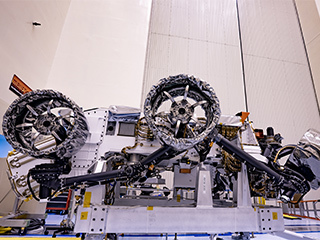
June 13, 2021
NASA's Perseverance Mars Rover Gets Its Wheels and Air Brakes
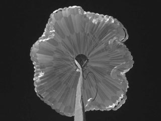
June 9, 2021
NASA's Perseverance Rover Goes Through Trials by Fire, Ice, Light and Sound
June 6, 2021
NASA Administrator Statement on Moon to Mars Initiative, FY 2021 Budget
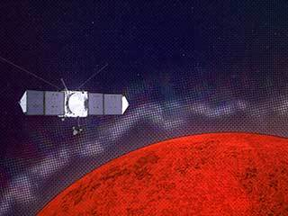
June 2, 2021
NASA's MAVEN Explores Mars to Understand Radio Interference at Earth
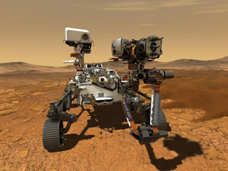
June 1, 2021
7 Things to Know About the Mars 2020 Perseverance Rover Mission

May 30, 2021
NASA Prepares for Moon and Mars With New Addition to Its Deep Space Network
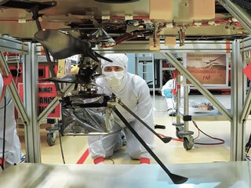
May 30, 2021
How NASA's Mars Helicopter Will Reach the Red Planet's Surface
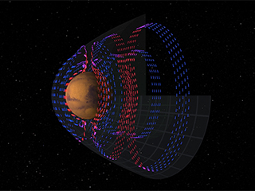
May 28, 2021
MAVEN Maps Electric Currents around Mars that are Fundamental to Atmospheric Loss
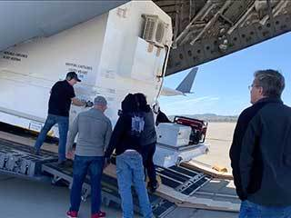
May 26, 2021
NASA's Mars 2020 Rover Goes Coast-to-Coast to Prep for Launch
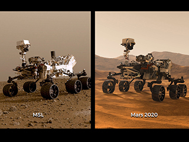
May 26, 2021
Two Rovers to Roll on Mars Again: Curiosity and Mars 2020
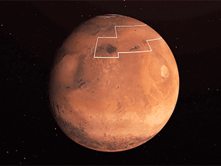
May 19, 2021
NASA's Treasure Map for Water Ice on Mars
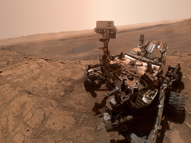
May 19, 2021
New Selfie Shows Curiosity, the Mars Chemist
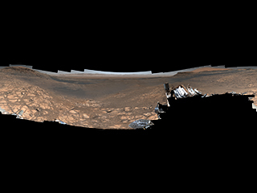
May 18, 2021
NASA's Curiosity Mars Rover Snaps Its Highest-Resolution Panorama Yet
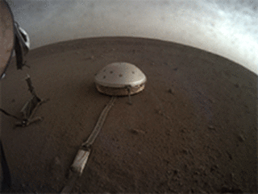
May 16, 2021
NASA's InSight 'Hears' Peculiar Sounds on Mars
You Might Also Like
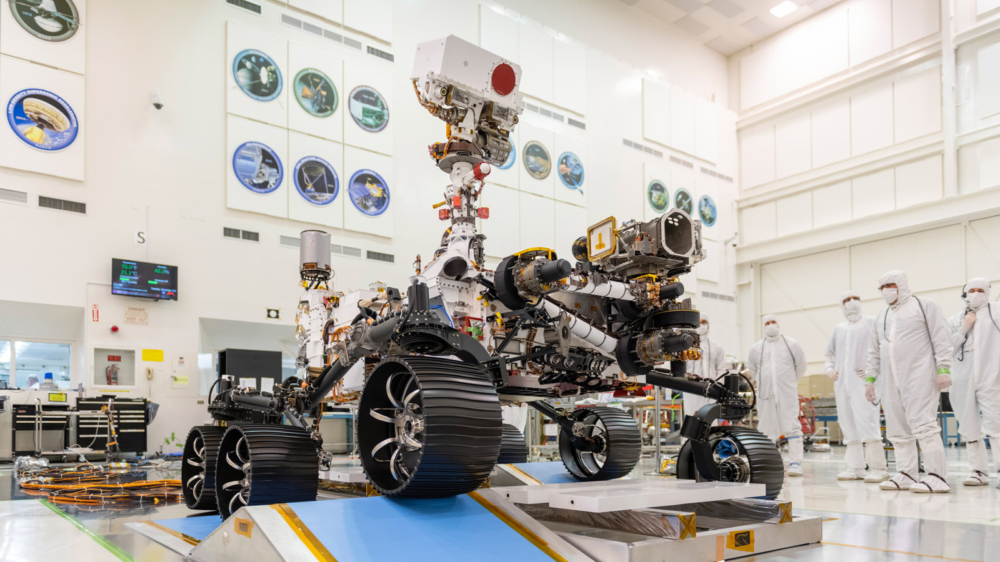
NASA to Broadcast Mars 2020 Perseverance Launch, Prelaunch Activities
The Launch Is Approaching for NASA's Next Mars Rover, Perseverance
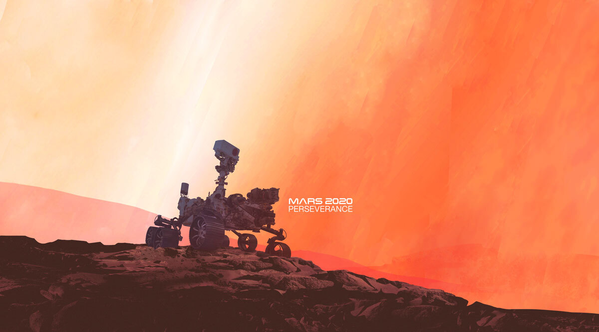
NASA to Hold Mars 2020 Perseverance Rover Launch Briefing
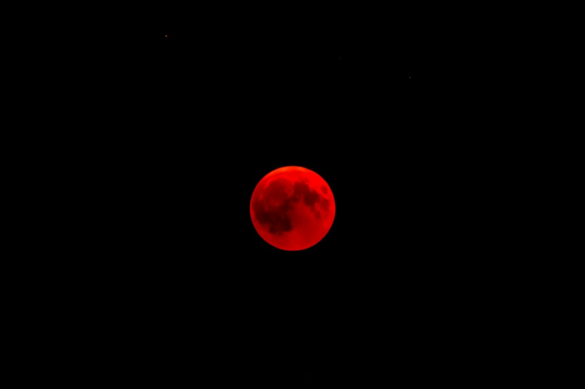
With supporting text below as a natural lead-in to additional content.
With supporting text below as a natural lead-in to additional content.
With supporting text below as a natural lead-in to additional content.
With supporting text below as a natural lead-in to additional content.
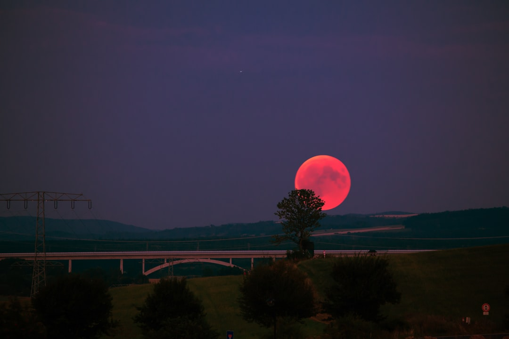
With supporting text below as a natural lead-in to additional content.
With supporting text below as a natural lead-in to additional content.